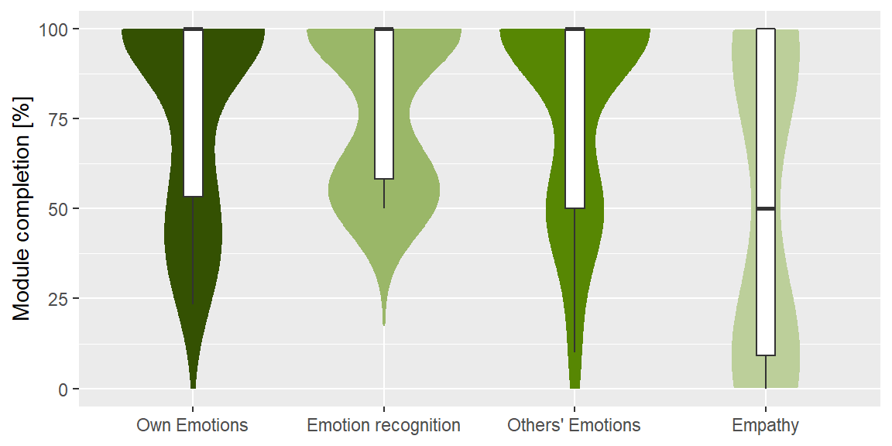

# Load app questionnaire data
load.Rdata(filename = "./data/app_qn.Rdata", "app_qn")App evaluation
Acceptance
My child had / was…
# Select data for acceptibility questions
app_acc = as_tibble(app_qn)
app_acc = app_acc %>% dplyr::select(Fun:Practiced_without_parent)
# Recode variable
app_acc = data.frame(lapply(app_acc, factor, ordered = TRUE, levels = 1:5, labels = c("Do not agree",
"Rather not agree", "Partly agree", "Rather agree", "Agree")))
# Add training info
app_acc$group = app_qn$App
# Separate by training / control group
app_acc_ZE = app_acc[app_acc$group == "TG", ]
app_acc_SB = app_acc[app_acc$group == "CG", ]
app_acc_ZE = subset(app_acc_ZE, select = -c(group))
app_acc_SB = subset(app_acc_SB, select = -c(group))
# Combine data sets (account for different lengths of data frames)
comb_acc_app = merge(app_acc_SB, app_acc_ZE, by = "row.names", all = T, suffixes = c("",
""))
comb_acc_app$Row.names <- NULL
# Plot likert plot
plot_likert(comb_acc_app, catcount = 5, values = FALSE, wrap.legend.labels = 5, c(rep("Control Group",
8), rep("Training Group", 8)), geom.colors = c("#040a0b", "#1a3e43", "#2b6770",
"#80a4a9", "#bfd1d4"), rel_heights = c(9, 11), wrap.labels = 65, reverse.scale = TRUE,
show.n = FALSE, axis.labels = c("fun engaging with the app.", "motivated to train with the app.",
"frustrated during training.", "bored during training.", "wanted to play longer than agreed.",
"motivated by the app's rewards.", "difficulty understanding some of the app's content.",
"trained mostly without me."))
Usability
# Select data for acceptibility questions
app_usa = as_tibble(app_qn)
app_usa = app_usa %>% dplyr::select(Use_App_self_explanatory:Use_Training_Stressful)
# Recode variable
app_usa = data.frame(lapply(app_usa, factor, ordered = TRUE, levels = 1:5, labels = c("Do not agree",
"Rather not agree", "Partly agree", "Rather agree", "Agree")))
# Add training info
app_usa$group = app_qn$App
# Separate by training / control group
app_usa_ZE = app_usa[app_usa$group == "TG", ]
app_usa_SB = app_usa[app_usa$group == "CG", ]
app_usa_ZE = subset(app_usa_ZE, select = -c(group))
app_usa_SB = subset(app_usa_SB, select = -c(group))
# Combine data sets (account for different lengths of data frames)
comb_int_use = merge(app_usa_SB, app_usa_ZE, by = "row.names", all = T, suffixes = c("",
""))
comb_int_use$Row.names <- NULL
# Plot likert plot
plot_likert(comb_int_use, catcount = 5, values = FALSE, wrap.legend.labels = 5, c(rep("Control Group",
5), rep("Training Group", 5)), geom.colors = c("#121117", "#2e2b3b", "#5b5675",
"#7c7891", "#ceccd6"), rel_heights = c(8, 10), wrap.labels = 65, reverse.scale = TRUE,
show.n = FALSE, axis.labels = c("App was self-explanatory.", "The training manual was helpful.",
"Training was compatible the daily routines.", "I felt adequately supervised.",
"I was mentally stressed during the training."))
Behavioral changes induced by the app training
After completion of the training, me as dad/mom found that…
# Select data for acceptibility questions
app_beh = as_tibble(app_qn)
app_beh = app_beh %>% dplyr::select(Behav_Interest_Feelings:Behav_Interest_Languages)
# Recode variable
app_beh = data.frame(lapply(app_beh, factor, ordered = TRUE, levels = 1:5, labels = c("Do not agree",
"Rather not agree", "Partly agree", "Rather agree", "Agree")))
# Add training info
app_beh$group = app_qn$App
# Separate by training / control group
app_beh_ZE = app_beh[app_beh$group == "TG", ]
app_beh_SB = app_beh[app_beh$group == "CG", ]
app_beh_ZE = subset(app_beh_ZE, select = -c(group))
app_beh_SB = subset(app_beh_SB, select = -c(group))
# Combine data sets (account for different lengths of data frames)
comb_int_use = merge(app_beh_SB, app_beh_ZE, by = "row.names", all = T, suffixes = c("",
""))
comb_int_use$Row.names <- NULL
# Plot likert plot
plot_likert(comb_int_use, catcount = 5, values = FALSE, wrap.legend.labels = 5, c(rep("Control Group",
9), rep("Training Group", 9)), geom.colors = c("#23180d", "#583c22", "#9e6c3c",
"#c09369", "#d8bca1"), rel_heights = c(8, 10), wrap.labels = 65, reverse.scale = TRUE,
show.n = FALSE, axis.labels = c("my child shows more interest in feelings.",
"my child deals better with its own feelings.", "my child reacts more appropriately to others's feelings.",
"my child is more open-minded about his environment.", "my child spends more time with other children.",
"communication about feelings in our family improved.", "I have a better relationship with my child.",
"my child uses English words or phrases more often.", "my child is more interested in other languages."))
App engagement
# Select data for app engagement and change to long format
app_eng = as_tibble(app_qn)
app_eng = subset(app_eng, App == "TG")
app_eng = app_eng %>% dplyr::select(mod_1:mod_4)
app_eng = gather(app_eng, module, complete, mod_1:mod_4, factor_key = TRUE)
app_eng = app_eng[complete.cases(app_eng), ]
# Plot distribution
ggplot(app_eng, aes(x = module, y = complete)) + geom_violin(aes(fill = module, color = module),
trim = FALSE, width = 0.8) + geom_boxplot(width = 0.1) + # geom_jitter(height = 0, width = 0.1)+
scale_x_discrete(labels = c("Own Emotions", "Emotion recognition", "Others' Emotions",
"Empathy")) + scale_y_continuous(name = "Module completion [%]", limits = c(0,
100)) + scale_color_manual(values = c("#345102", "#9ab768", "#578703", "#bccf9a")) +
scale_fill_manual(values = c("#345102", "#9ab768", "#578703", "#bccf9a")) + theme(legend.position = "none",
axis.title.x = element_blank())
The overall completion rate of the training app was 72.88 %.
Qualitative questions
Likes/Dislikes training
# http://www.sthda.com/english/wiki/text-mining-and-word-cloud-fundamentals-in-r-5-simple-steps-you-should-know
# https://cran.r-project.org/web/packages/ggwordcloud/vignettes/ggwordcloud.html
# Read txt files
text_CG_likes = readLines("./data/wc_CG_likes.txt")
text_CG_dislikes = readLines("./data/wc_CG_dislikes.txt")
text_TG_likes = readLines("./data/wc_TG_likes.txt")
text_TG_dislikes = readLines("./data/wc_TG_dislikes.txt")
# Load data as corpus
CG_likes = Corpus(VectorSource(text_CG_likes))
CG_dislikes = Corpus(VectorSource(text_CG_dislikes))
TG_likes = Corpus(VectorSource(text_TG_likes))
TG_dislikes = Corpus(VectorSource(text_TG_dislikes))What did your child like most about training with the app?
# Build a term-document matrix
dtm = TermDocumentMatrix(CG_likes)
m = as.matrix(dtm)
v = sort(rowSums(m), decreasing = TRUE)
d_CG_likes = data.frame(word = names(v), freq = v)
dtm = TermDocumentMatrix(TG_likes)
m = as.matrix(dtm)
v = sort(rowSums(m), decreasing = TRUE)
d_TG_likes = data.frame(word = names(v), freq = v)
# Build word coulds
CG_likes_word = ggplot(d_CG_likes, aes(label = word, size = freq, color = freq)) +
geom_text_wordcloud(area_corr = TRUE, rm_outside = TRUE) + scale_size_area(max_size = 22) +
theme_minimal() + scale_color_gradient(low = "#041012", high = "#5fa7b3") + ggtitle("Control group")
TG_likes_word = ggplot(d_TG_likes, aes(label = word, size = freq, color = freq)) +
geom_text_wordcloud(area_corr = TRUE, rm_outside = TRUE) + scale_size_area(max_size = 22) +
theme_minimal() + scale_color_gradient(low = "#63430a", high = "#c48310") + ggtitle("Training group")
# Display plots
fig_like_words = cowplot::plot_grid(CG_likes_word, TG_likes_word, nrow = 2, rel_widths = c(1,
1))
fig_like_words
What did he/she like less?
# Build a term-document matrix
dtm = TermDocumentMatrix(CG_dislikes)
m = as.matrix(dtm)
v = sort(rowSums(m), decreasing = TRUE)
d_CG_dislikes = data.frame(word = names(v), freq = v)
dtm = TermDocumentMatrix(TG_dislikes)
m = as.matrix(dtm)
v = sort(rowSums(m), decreasing = TRUE)
d_TG_dislikes = data.frame(word = names(v), freq = v)
# Build word coulds
CG_dislikes_word = ggplot(d_CG_dislikes, aes(label = word, size = freq, color = freq)) +
geom_text_wordcloud(area_corr = TRUE, rm_outside = TRUE) + scale_size_area(max_size = 21) +
theme_minimal() + scale_color_gradient(low = "#041012", high = "#5fa7b3") + ggtitle("Control group")
TG_dislikes_word = ggplot(d_TG_dislikes, aes(label = word, size = freq, color = freq)) +
geom_text_wordcloud(area_corr = TRUE, rm_outside = TRUE) + scale_size_area(max_size = 21) +
theme_minimal() + scale_color_gradient(low = "#63430a", high = "#c48310") + ggtitle("Training group")
# Display plots
fig_like_words = cowplot::plot_grid(CG_dislikes_word, TG_dislikes_word, nrow = 2,
rel_widths = c(1, 1))
fig_like_words
Training difficulties
What did your child find difficult while exercising? What did he or she possibly not understand?
# Read txt files
text_CG_diff = readLines("./data/wc_CG_diff.txt")
text_TG_diff = readLines("./data/wc_TG_diff.txt")
# Load data as corpus
CG_diff = Corpus(VectorSource(text_CG_diff))
TG_diff = Corpus(VectorSource(text_TG_diff))
# Build a term-document matrix
dtm = TermDocumentMatrix(CG_diff)
m = as.matrix(dtm)
v = sort(rowSums(m), decreasing = TRUE)
d_CG_diff = data.frame(word = names(v), freq = v)
dtm = TermDocumentMatrix(TG_diff)
m = as.matrix(dtm)
v = sort(rowSums(m), decreasing = TRUE)
d_TG_diff = data.frame(word = names(v), freq = v)
# Build word coulds
CG_diff_word = ggplot(d_CG_diff, aes(label = word, size = freq, color = freq)) +
geom_text_wordcloud(area_corr = TRUE) + scale_size_area(max_size = 18) + theme_minimal() +
scale_color_gradient(low = "#041012", high = "#5fa7b3") + ggtitle("Control group")
TG_diff_word = ggplot(d_TG_diff, aes(label = word, size = freq, color = freq)) +
geom_text_wordcloud(area_corr = TRUE) + scale_size_area(max_size = 18) + theme_minimal() +
scale_color_gradient(low = "#63430a", high = "#c48310") + ggtitle("Training group")
# Display plots
fig_diff_words = cowplot::plot_grid(CG_diff_word, TG_diff_word, nrow = 2, rel_widths = c(1,
1))
fig_diff_words
Parental involvement
How was your involvement in your child’s training (e.g. did your child tend to train alone or were you present the whole time, did you tend to observe or did you have to explain a lot)?
# Read txt files
text_CG_involv = readLines("./data/wc_CG_involv.txt")
text_TG_involv = readLines("./data/wc_TG_involv.txt")
# Load data as corpus
CG_involv = Corpus(VectorSource(text_CG_involv))
TG_involv = Corpus(VectorSource(text_TG_involv))
# Build a term-document matrix
dtm = TermDocumentMatrix(CG_involv)
m = as.matrix(dtm)
v = sort(rowSums(m), decreasing = TRUE)
d_CG_involv = data.frame(word = names(v), freq = v)
dtm = TermDocumentMatrix(TG_involv)
m = as.matrix(dtm)
v = sort(rowSums(m), decreasing = TRUE)
d_TG_involv = data.frame(word = names(v), freq = v)
# Build word coulds
CG_involv_word = ggplot(d_CG_involv, aes(label = word, size = freq, color = freq)) +
geom_text_wordcloud(area_corr = TRUE, rm_outside = TRUE) + scale_size_area(max_size = 18) +
theme_minimal() + scale_color_gradient(low = "#041012", high = "#5fa7b3") + ggtitle("Control group")
TG_involv_word = ggplot(d_TG_involv, aes(label = word, size = freq, color = freq)) +
geom_text_wordcloud(area_corr = TRUE, rm_outside = TRUE) + scale_size_area(max_size = 18) +
theme_minimal() + scale_color_gradient(low = "#63430a", high = "#c48310") + ggtitle("Training group")
# Display plots
fig_involv_words = cowplot::plot_grid(CG_involv_word, TG_involv_word, nrow = 2, rel_widths = c(1,
1))
fig_involv_words
Perceived change
Has your child changed in terms of his or her behavior in school/kindergarten/family? If so, please describe how these changes manifest themselves.
# Read txt files
text_CG_chang = readLines("./data/wc_CG_chang.txt")
text_TG_chang = readLines("./data/wc_TG_chang.txt")
# Load data as corpus
CG_chang = Corpus(VectorSource(text_CG_chang))
TG_chang = Corpus(VectorSource(text_TG_chang))
# Build a term-document matrix
dtm = TermDocumentMatrix(CG_chang)
m = as.matrix(dtm)
v = sort(rowSums(m), decreasing = TRUE)
d_CG_chang = data.frame(word = names(v), freq = v)
dtm = TermDocumentMatrix(TG_chang)
m = as.matrix(dtm)
v = sort(rowSums(m), decreasing = TRUE)
d_TG_chang = data.frame(word = names(v), freq = v)
# Build word coulds
CG_chang_word = ggplot(d_CG_chang, aes(label = word, size = freq, color = freq)) +
geom_text_wordcloud(area_corr = TRUE, rm_outside = TRUE) + scale_size_area(max_size = 20) +
theme_minimal() + scale_color_gradient(low = "#041012", high = "#5fa7b3") + ggtitle("Control group")
TG_chang_word = ggplot(d_TG_chang, aes(label = word, size = freq, color = freq)) +
geom_text_wordcloud(area_corr = TRUE, rm_outside = TRUE) + scale_size_area(max_size = 20) +
theme_minimal() + scale_color_gradient(low = "#63430a", high = "#c48310") + ggtitle("Training group")
# Display plots
fig_chang_words = cowplot::plot_grid(CG_chang_word, TG_chang_word, nrow = 2, rel_widths = c(1,
1))
fig_chang_words
Other comments
- During Corona: Children consumed more media, were alone solely with parents and siblings